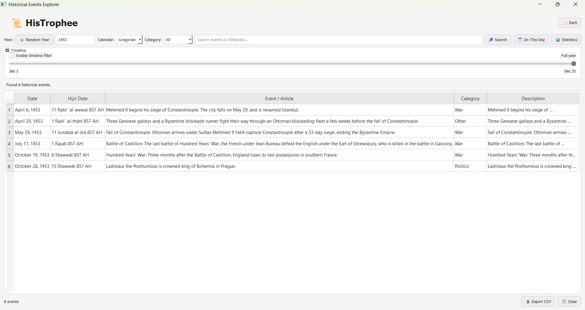
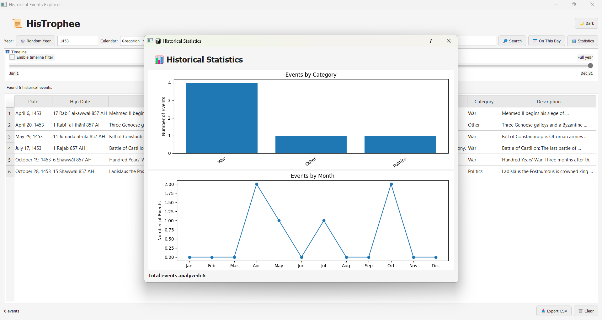
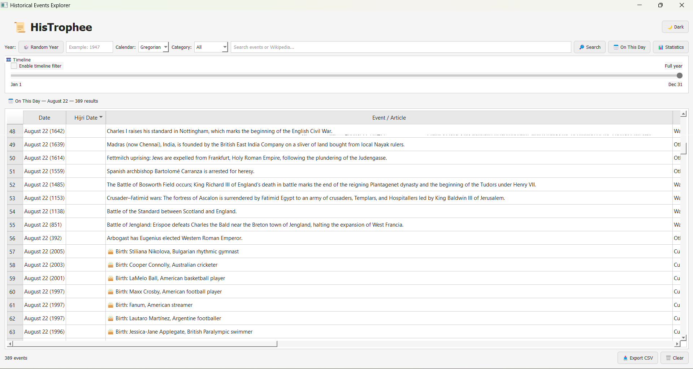
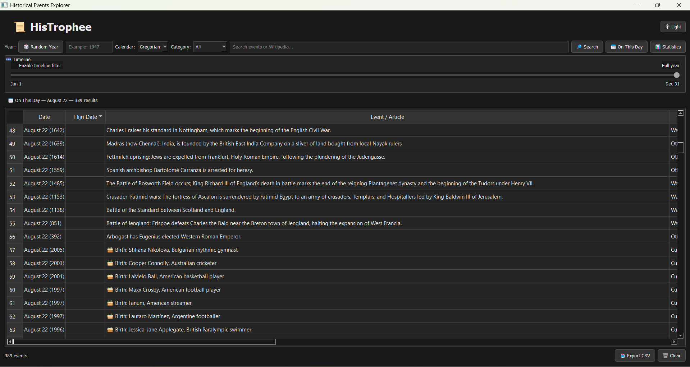

Search
Enter a year, pick a calendar, optionally add a category or a keyword. Results update below.
HisTrophee is a small PyQt5 desktop app for looking up historical events by year, category, or keyword. Pull up a date on the Gregorian or Hijri calendar, scrub through a year on the timeline, and fall back to Wikipedia when the events API comes up short.
Nothing fancy — a search box, a few filters, and a couple of ways to look at the results.
Enter a year, pick a calendar, optionally add a category or a keyword. Results update below.
Events get tagged War, Politics, Science, Religion or Technology so you can filter down to one.
One toggle, no restart needed.
Drag through the year and events reveal themselves as you pass their date.
A quick Matplotlib breakdown of your results by category and by month.
When the events API doesn't turn up much, keyword searches also check Wikipedia.
A separate tab pulls Wikimedia's events, births and deaths for today's date.
Search by Hijri year and see both the Hijri and Gregorian date side by side.
Whatever's in the results table right now, dumped to a .csv file.
Four fields, all optional except the year.
Year is required. Calendar, category, and keyword are there if you want to narrow it down further.
Turn it on and events appear as the slider passes their date, January through December.
Pulls straight from Wikimedia's On This Day feed for today's date, split into three tabs.
Things that happened on this date, other years.
Notable people born on this date.
Notable people who died on this date.
A separate tab charts whatever's currently loaded in the results table — no extra fetching.
Bar chart of which categories show up most in the current results.
Same idea, grouped by month instead.
Total number of events in the current result set.
Search by Gregorian year, or by Hijri year if that's the one you're working from.
| Calendar | Used for | Handled by |
|---|---|---|
| Gregorian | Everyday civil dates | Python's date handling |
| Hijri | Islamic calendar years | Aladhan API |
API Ninjas doesn't cover every year and keyword well, so keyword searches also check Wikipedia.
Matching Wikipedia articles show up next to the regular event list, not instead of it.
Double-click an entry for a short description, or open the full page in your browser.
One button, writes exactly what's in the table.
See How It Looks Like!

Search controls, timeline and results table.

Category and monthly event analysis.

Daily historical discoveries from Wikimedia.

The darker HisTrophee interface.
| Technology | Role |
|---|---|
| Python | Application logic |
| PyQt5 | Desktop user interface |
| Requests | HTTP/API communication |
| Matplotlib | Statistics and charts |
| API Ninjas | Historical event data |
| Aladhan | Hijri/Gregorian conversion |
| Wikimedia | Wikipedia and On This Day data |
Grab the Windows build, or run it from source if you're on another OS or want to poke at the code.
No Python required.
For macOS, Linux, or if you want to edit the code.
Uses PyInstaller.
The executable ends up in dist/.
Three services, no local database.
The main source for historical events by year.
Hijri ↔ Gregorian date conversion.
Wikipedia search, plus the On This Day feed.
Don't commit a real key to a public repo. Read it from an environment variable instead.
Double-check your API Ninjas key, your connection, and whether you've hit their rate limit.
Drop the category or keyword filter, try a different year, or let the Wikipedia fallback do its thing.
You probably don't have Matplotlib installed — pip install matplotlib fixes it.
Yes, for everything except the UI itself — events, date conversion, and Wikipedia are all fetched live.
A small Python/PyQt5 desktop app for looking up historical events by year. Nothing more mysterious than that.
The app itself, yes. The API Ninjas service it relies on has its own free tier and rate limits.
No database — every search hits the APIs fresh.
Yes, happily. See the contributing section below.
The usual fork-branch-PR flow.
Fill in your actual license here before you publish.
See the LICENSE file in the repo.